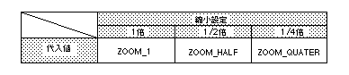

Return to previous page | Return to menu | Go to next page
void
Scroll function
Determine NBG scaling mode
void slZoomModeNbg0(mode)
void slZoomModeNbg1(mode)
Uint16 mode ;
mode Uint16 type numerical value corresponding to zoom mode specification
Set the enlargement / reduction mode of “NBG0, NBG1” that can be enlarged / reduced in the normal scroll to the reduction enable register.
Refer to the table below for the values assigned to the parameters.
None
Depending on the reduction setting, the range that can be enlarged or reduced changes as follows. * Reduction setting 1/1 times: (1/1 to 256 times) Reduction setting 1/2 times: (1/2 times to 256 times) Reduction setting 1/4 times: (1/4 times to 256 times)

Note) The values in the above table are defined in “sl_def.h” included with the system.
Reference: Chapter 8 Scroll
slZoomModeNbg0,1